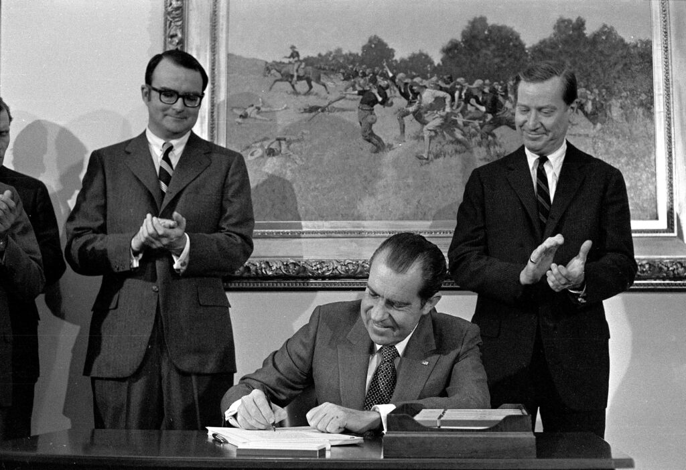

Presidency and Policies
Domestic Policies
Nixon implemented significant domestic policies, including the establishment of the Environmental Protection Agency (EPA) and efforts to control inflation.

Foreign Policy
Nixon is known for his diplomatic visit to China in 1972 and efforts in easing Cold War tensions through détente.
The Watergate Scandal
The Watergate scandal led to Nixon’s resignation in 1974, marking a turning point in American political history.